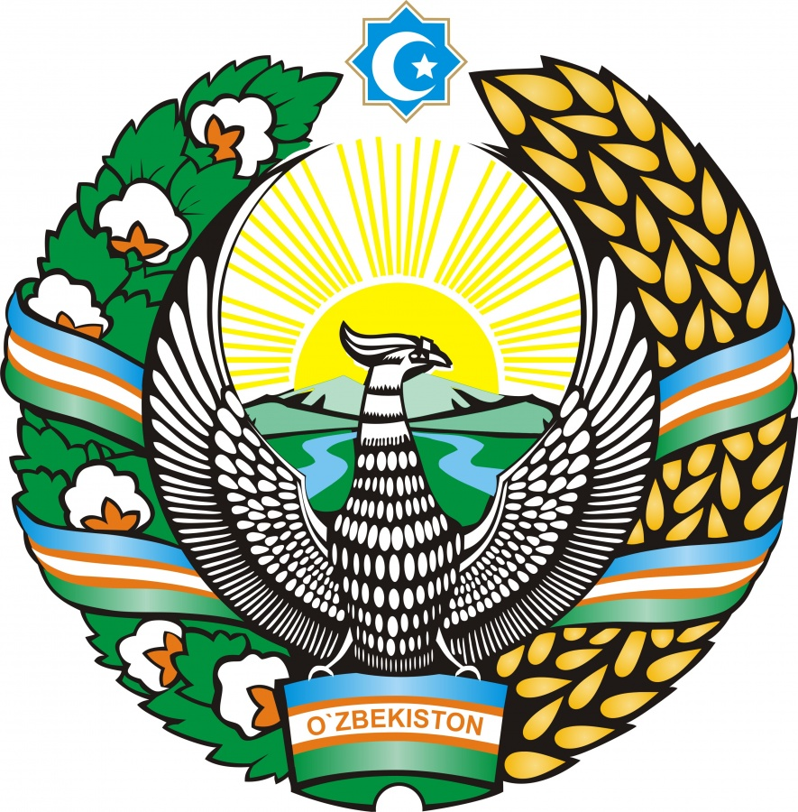

O`zbekiston haqida ma`lumotlar
Oʻzbekiston (rasman: Oʻzbekiston Respublikasi) — Markaziy Osiyoning markaziy qismida joylashgan mamlakat. Oʻzbekistonning poytaxti — Toshkent shahri boʻlib, davlat tili — oʻzbek tili hisoblanadi. Maydoni — 448,978[5] km2. Aholi soni — 35 445 000 kishi (2022)[6]. Pul birligi — soʻm. Oʻzbekiston Respublikasi 12 ta viloyat, Toshkent shahri va Qoraqalpogʻiston Respublikasidan iboratdir, shuningdek, davlat mustaqil, demokratik, dunyoviy va konstitutsiyaviy davlat ham hisoblanadi. Oʻzbekiston MDH, BMT, YXHT va SHHT aʼzosidir. Oʻzbekiston qirgʻoqqa ega boʻlmagan besh mamlakat bilan, yaʼni: shimoldan Qozogʻiston; shimoli-sharqdan Qirgʻiziston; janubi-sharqdan Tojikiston; janubdan Afgʻoniston; va janubi-gʻarbiy qismida Turkmaniston bilan chegaradosh.
Oʻzbekiston iqtisodiyoti bozor iqtisodiyotiga bosqichma-bosqich oʻtadi, tashqi savdo siyosati import oʻrini bosishga asoslangan. 2017-yil sentabrida mamlakat valyutasi bozor kursi boʻyicha toʻliq konvertatsiya qilinmoqda. Oʻzbekiston paxta tolasini ishlab chiqaruvchi va eksport qiluvchi yirik korxonadir. Mamlakatda shuningdek, dunyodagi eng yirik oltin koni mavjud. Sovet davridagi ulkan energiya ishlab chiqarish qurilmalari va tabiiy gazni yetkazib berish bilan Oʻzbekiston Markaziy Osiyodagi eng yirik elektr ishlab chiqaruvchisi boʻldi.
O`zbekiston bayrogʻi
“Oʻzbekiston Respublikasi Davlat bayrogʻi toʻgʻrisida”gi qonun 1991 yil 18 noyabrda Oʻzbekiston Respublikasi Oliy Kengashining navbatdan tashqari oʻtkazilgan VII sessiyasida qabul qilingan.
Davlat bayrogʻi va uning ramzi bugungi Oʻzbekiston sarhadida qadimda mavjud boʻlgan davlatlar bilan tarixan bogʻliqligini anglatadi hamda respublikaning milliy-madaniy anʼanalarini oʻzida mujassamlashtiradi.
1. Bayroqdagi moviy rang tiriklik mazmuni aks etgan mangu osmon va obihayot ramzi. Timsollar tilida bu – yaxshilikni, donishmandlikni, halollikni, shon-shuhrat va sadoqatni bildiradi. Binobarin, Amir Temur davlati bayrogʻining rangi ham moviy rangda edi.
2. Bayroqdagi oq rang – muqaddas tinchlik ramzi boʻlib, u kun charogʻonligi va koinot yoritqichlari bilan uygʻunlashib ketadi. Oq rang – poklik, begʻuborlik, soflikni, orzu va xayollar tozaligi, ichki goʻzallikka intilishning timsoli.
3. Yashil rang – tabiatning yangilanish ramzi. U koʻpgina xalqlarda navqironlik, umid va shodumonlik timsoli hisoblanadi.
4. Qizil chiziqlar – vujudimizda joʻshib oqayotgan hayotiy qudrat irmoqlarini anglatadi.
O`zbekiston gerbi
Davlat gerbi O‘zbekiston Respublikasining 1992 yil 2 iyuldagi 616 XII sonli «O‘zbekiston Respublikasi Davlat gerbi to‘g‘risida»gi Qonuni bilan tasdiqlangan. O‘zbekiston Respublikasi Davlat gerbi quyidagi ko‘rinishga ega: tog‘lar, daryolar va so‘l tomoni bug‘doy boshoqlaridan, o‘ng tomoni esa chanoqlari ochilgan g‘o‘za shoxlaridan iborat chambarga o‘ralgan gullagan vodiy uzra quyosh zarrin nurlarini sochib turadi. Gerbning yuqori qismida Respublika hurligining ramzi sifatida sakkizburchak tasvirlangan bo‘lib, uning ichki qismida yarim oy va yulduz tasvirlangan. Gerbning markazida baxt va erksevarlik ramzi — qanotlarini yozgan Humo qushi tasvirlangan. Gerbning pastki qismida O‘zbekiston Respublikasi Davlat bayrog‘ini ifoda etuvchi chambar lentasining bantida «O‘zbekiston» deb yozib qo‘yilgan. O‘zbekiston Respublikasi Davlat gerbining rangli ko‘rinishida: Humo qushi va daryolar — kumush rangida; quyosh,boshoqlar, paxta chanoqlari va «O‘zbekiston» yozuvi — oltin rangida; g‘o‘za shoxlari va barglari, tog‘lar va vodiy — yashil rangda; chanoqlardagi paxta — oq rangda; lenta — O‘zbekiston Respublikasi Davlat bayrog‘ining ranglarini aks ettiruvchi uch xil rangda; sakkizburchak — oltin zarhal bilan hoshiyalangan holda havo rangda; yarim oy va yulduzlar — oq rangida tasvirlangan.

O`zbekiston viloyatlari
ETIBORINGIZ UCHUN RAHMAT!